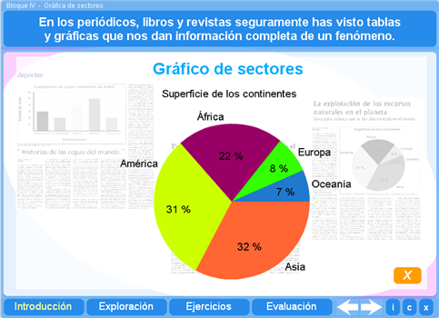
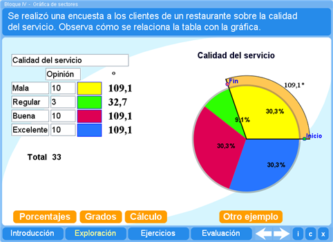
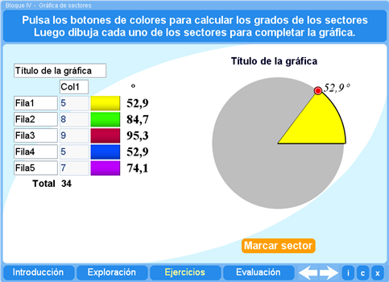
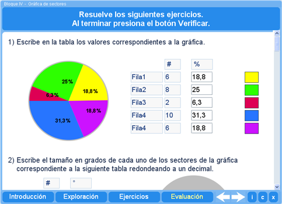
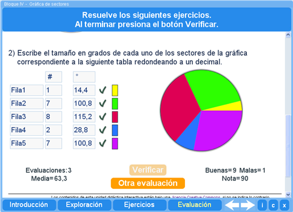

Objetivo
Mostrar ejemplos de situaciones cuyos datos conviene presentar en gráficas de sectores. Además se pide al alumno construir gráficas de sectores a partir de una tabla y también obtener datos de una gráfica de sectores y trasladarlos a una tabla.
Instrucciones generales
Se puede navegar entre los apartados con el menú de la parte inferior. Este menú aparece a lo largo de todo el interactivo y conserva su funcionalidad.

También se puede navegar por las escenas por medio de las flechas de navegación que aparecen en el lado inferior derecho del interactivo. Dentro de los apartados Exploración y Ejercicios es necesario utilizar estas flechas para acceder a las escenas sucesivas de dichos apartados.

En la parte inferior derecha del interactivo se encuentran los siguientes botones:
| Muestra la documentación del interactivo. | |
| Despliega los créditos correspondientes a este interactivo. | |
| Cierra el interactivo. |
Contenidos
Introducción
Presenta ejemplos de gráficas de barras, de líneas y de sectores.

Exploración
Presenta la relación entre los datos de una tabla y la gráfica de sectores que la representa, así como el procedimiento para calcular los porcentajes que representan los sectores y las medidas de los mismos.

Ejercicio
El alumno puede practicar la construcción de gráficas de sectores obteniendo la medida de cada sector.

Evaluación
La evaluación consta de dos actividades. En la primera el alumno deberá obtener información de una gráfica para rellenar una tabla.

En la segunda actividad el alumno deberá calcular la medida de cada sector de la gráfica.

Se pueden contestar tantas evaluaciones como se quiera. En la pantalla se presentará el registro de cada evaluación y la media de todas las evaluaciones contestadas.
| Los materiales aquí presentados utilizan el applet Descartes Web 2.0. | |

|
Los contenidos de esta unidad didáctica están bajo una licencia de Creative Commons. |